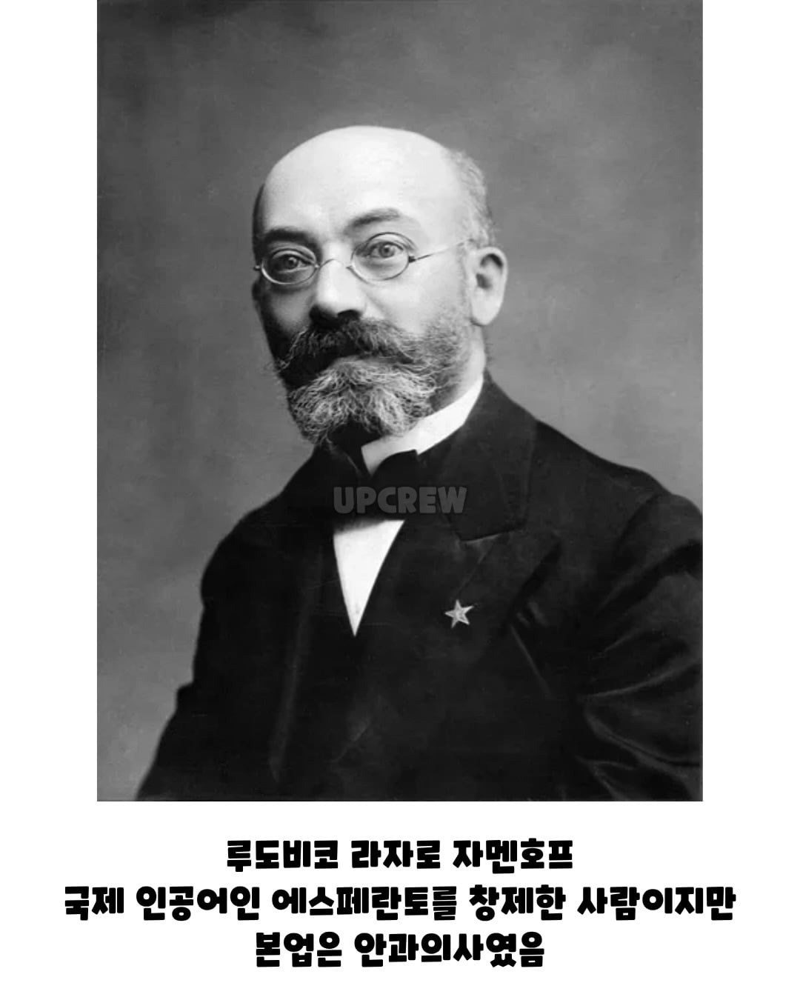
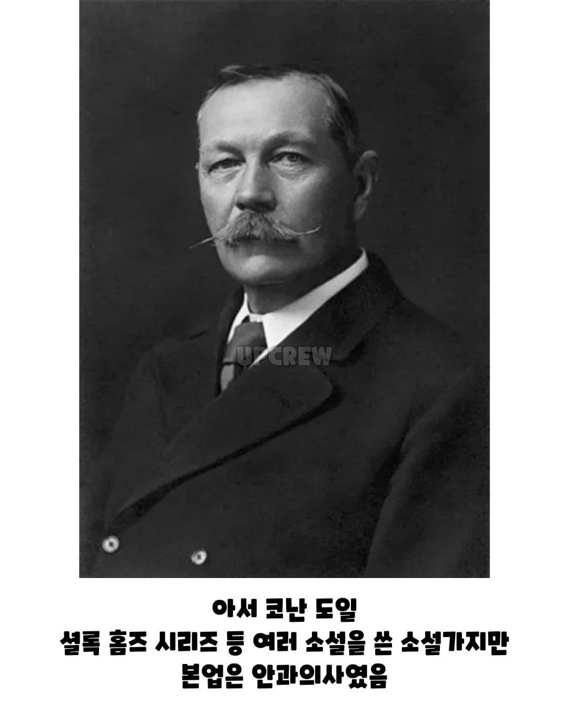

안과의사가 한가한가?
???: 내 업적을 눈으로 보게 해주겠다
??? : 눈을 떴구나....
의사입니다 어디에요? 여기에요? 어디에요 여기에요?
이사람 그걸로 참많이 나오더라 ㅋㅋㅋㅋㅋ
신병도 나오고 삼성 통근버스 캠페인 광고도찍음

큰일은 안과의사가
사람 눈을 들여다보면 뭐가 보이나 보다
")
치과도 있지.ㅋㅋ 좀 한가한 편이라 그런듯
공병우박사는 그냥 전산학 박사하고 해도 믿을만한 업적인데 ㅋㅋ
심지어 한국 최초의 안과전문병원을 만들고 크 운영도 레전드엿듬. 한때 한국에서 세금 랭킹 4위였다니 말다했지
안과의사로서도 잘해
전산학에도 조예가 깊어
시각장애인도 잘챙겨줘
못하는게없으신분이노
옛날 와인킹에 나오던 패트릭 할배도 안과의사였나
안과의사들이 먼가 있나 ㅋㅋ
두눈 똑바로 뜨고 봐라
그리고 아무한테도 말하지마라
아사드는 일종의 가업승계 아닌가 아빠 살아있을때 안과의사를 한건가
한과의사가 안가하긴함
게다가 예민한 눈에 거슬렸던거 함 해보자 한거일수도
안과가 한가한가부지